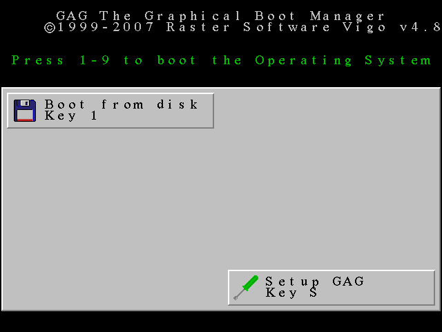

GAG is a Boot Manager program, this is, a program that is loaded when the computer is turned on and allows to choose the operating system you want to use. Its main features are:
GAG is a program distributed 'as is', without any warranty of any kind. The author will not be responsible if there is loss of data on your hard disk or any other problem. Use it at your own risk.
GAG is distributed under a GPL license. Here you can read it.
If you have an operating system which needs a boot loader (like Linux or BSD, which needs GRUB), you must install it in the SuperBlock of the root partition. With GRUB, just type from a command line (as root):
grub-install /dev/root_partition
Being root_partition your root partition, of course. An example: if /dev/sda7 is your root partition, just type:
grub-install /dev/sda7
With windows there's no special care.
LBA support (for hard disks bigger than 8 Gigabytes) was added in the version 4.0. But it still relies on the BIOS, so you need a recent BIOS version that supports the INT13h extensions. These extensions were created in 1998, so if your BIOS was written before that year, GAG wont be able to boot operating systems located in a partition beyond the original limit of 8 Gigabytes.
Of course, all current mainboards support them, so it should not be a problem unless you install GAG in a very old computer.
There are two ways to install GAG: as a floppy disk image (both from a true floppy disk, or from a bootable CD-ROM), or directly from Linux.
For the first method you will need a blank 3 1/2 inch, high density, formatted floppy, or a blank CD-ROM. This allows you to install GAG without worrying about what operating system you have (if you have only windows, you must use this method).
This method is currently available only for Linux. Just open the Linux folder and run (as root) the script copy-files.sh. It will copy the linux installer and other needed files in /boot/gag.
Now you can use gag-install to install gag in your hard disk, passing as parameter the device where you want to install it.
Example: if /dev/sda is your boot hard disk, then you must use:
sudo gag-install /dev/sda
By default, this command install the english version and keyboard QWERTY. If you want to change it, you can specify the one you want with -k for the keyboard and -l for the language. An example:
sudo gag-install -k azerty -l french /dev/sda
To show the available keyboards, just type:
sudo gag-install -k
And to show the available languages, just type:
sudo gag-install -l
Again, don't forget to run grub-install before rebooting, or you won't be able to boot your Linux partition from GAG (if you already forgot it, just see in the FAQ how to fix it).
Now you can continue with the next section: Configuring GAG.
First, you will need to create the floppy. That's done using the RAWRITE2.EXE program.
Starting with GAG 4.01, all language versions are distributed on one single disk, with a little installation program. You only have to create the disk (see above the instructions of how to do it), boot your computer from that disk, et voila! The instructions for using it, the FAQ and the license can be read from the installer program.
IMPORTANT: once created, the disk will be seem to be empty (this is, you will not be able to read it from MS-DOS, Windows,...) but GAG is on it. Just boot your computer from it.
Insert the formatted disk in the floppy and type
INSTALL.BAT
The program will create the boot floppy.
Insert the formatted disk in your floppy drive.
Open the folder where you unzipped the GAG's zip file and double-click the icon INSTALL.BAT
Insert the formatted disk in your floppy drive.
Open the folder where you unzipped the GAG's zip file and double-click the icon INSTALL_XP.CMD
Open a DOS session (it can be window or full screen) and do the same as in FROM DOS.
If the program returns a DMA error, edit the CONFIG.SYS file and modify your DOS variable, putting it as
DOS=HIGH,UMB
Default value is DOS=LOW,NOUMB.
If you prefer, you can use the native program IMAGE.EXE, that comes in the OS/2 CD-ROM.
Insert the formatted floppy in disk drive and type
dd if=disk.dsk of=/dev/fd0 bs=512 count=2880
If you prefer, you can do too:
cat disk.dsk > /dev/fd0
In other UNIX systems is possible you must use something different to /dev/fd0.
You need a program that allows you to create floppies from disk images, and use it to copy the file DISK.DSK into the floppy.
Just use your favourite CD burn program (like NERO) to burn the CD image CDROM.ISO. But remember: you have to go to the main menu and choose Burn ISO image (or simmilar). If you just burn the file in a data CD it won't work!
Now that you have created the floppy or CD-ROM, restart your computer and boot it with the created floppy. You will see the main menu for the GAG Installer.
Press '1' to read the instructions (are the same that you can find here), press '2' to read the FAQ (the same that you can read here), press '3' to read the license (again, you can read it here), or press '4' to start the installation. If you want to uninstall GAG, just boot with this floppy/CD-ROM and use the option '5'.
After pressing '4', you will be prompted for your keyboard type:
It's very common to name a keyboard with the six first letters in the upper row. So a QWERTY keyboard is the one that has the letters Q, W, E, R, T and Y in its upper row, just below the numbers. The QWERTY keyboard is the most common, but there are at least two variants: the QWERTZ, mainly used in germany, and the AZERTY, mainly used in france.
The DVORAK keyboard is a special one, the position of each letter has been determined based on frequency of use, putting the most used letters directly under the fingers, and the less used in other positions. Some people affirm that this keyboard allows faster speeds (at least, that was the main goal when designed).
Finally, the Cyrillic keyboard is used mainly in Russia and neighboring countries, and must be used together with the Russian language. You MUST NOT use Cyrillic keyboard with other languages, or other keyboards with the Russian language, because GAG will not work.
With Cyrillic keyboard, lowercase strokes will become Cyrillic characters, and uppercase strokes will be converted to lowercase Latin characters.
Finally, the installer will ask you what language do you want to use:
After choosing the one you want, the installer will load GAG itself:

At this point you can continue with the next section: Configuring GAG.
When GAG's installer boots, it makes some tests. If it finds an error, it shows a number in the screen and halts the system. The errors are these ones:
BAD SECTOR: there was a read error while trying to load GAG. If you was booting from floppy, use another floppy without bad sectors. If you was booting from hard disk, use SafeBoot to boot an operating system and reinstall GAG. If the error persists, you have bad sectors in your hard disk.
GAG INSTALLER NOT FOUND: the code loaded from the floppy or the hard disk does not have the GAG signature. It's possible that the first track has been overwritten. Create again the floppy disk (or CD) and try again.